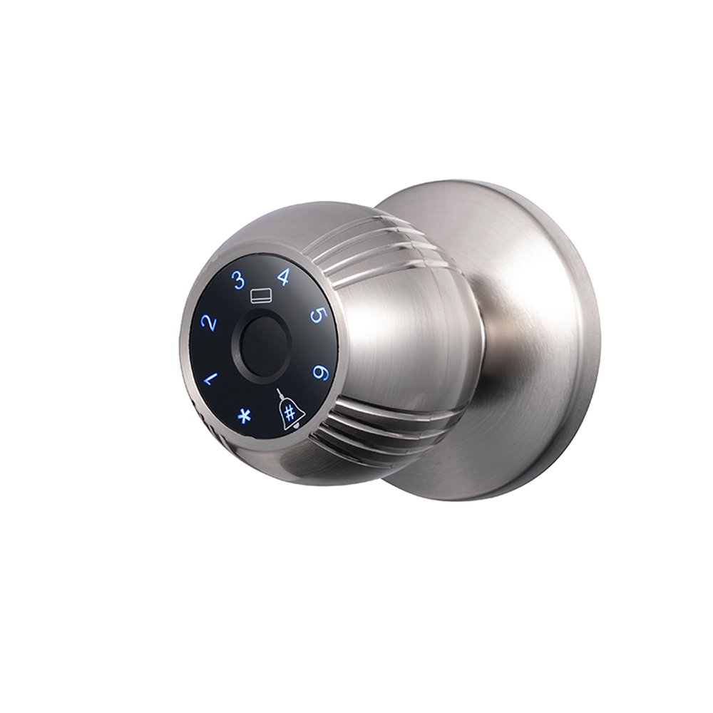

Projetada para o mercado global, a fechadura inteligente WAFU WF‑Q7 utiliza liga de alumínio premium e um estilo minimalista moderno para oferecer segurança fiável em casas, apartamentos, escritórios, hotéis e dormitórios escolares. Este artigo analisa em detalhe os destaques técnicos do modelo Q7, as vantagens do seu material e os cenários de aplicação.

1. Desempenho premium da liga de alumínio
A WF‑Q7 é construída com liga de alumínio de alta qualidade, escolhida por várias vantagens técnicas:
- Alta relação resistência‑peso: mantém a robustez estrutural enquanto reduz o peso para 750 g, diminuindo a carga na porta
- Excelente resistência à corrosão: tratamento especial de superfície garante desempenho superior tanto na versão prateada eletrogalvanizada como na versão preta pintada
- Condutividade térmica superior: ajuda a dissipar o calor dos componentes eletrónicos internos, prolongando a vida útil
- Ecológica e reciclável: cumpre normas ambientais da UE e apoia o desenvolvimento sustentável
2. Filosofia de design minimalista moderno
- Contorno aerodinâmico: ergonómico, confortável e natural de operar
- Janela de impressão digital oculta: mantém o painel limpo sem comprometer a precisão do reconhecimento
- Indicador LED: visível no escuro sem prejudicar a estética geral
- Múltiplos modos de entrada: impressão digital, PIN, cartão RFID, chave mecânica
3. Aplicação em múltiplos cenários
- Uso doméstico: gestão multiutilizador; cada membro da família pode ter uma credencial independente
- Arrendamento de apartamentos: função de PIN temporário facilita a gestão de inquilinos de curta duração
- Ambiente de escritório: permissões por período de tempo reforçam a segurança das áreas internas
- Cenário hoteleiro: pode integrar‑se com sistemas de gestão hoteleira para administração inteligente
- Dormitórios escolares: design anti‑violação adequado para ambientes coletivos de alto fluxo
4. Vantagens no e‑commerce transfronteiriço & posicionamento de mercado
- Embalagem padronizada: peso líquido de 750 g otimiza o custo logístico internacional
- Pronta para múltiplas plataformas: compatível com eBay, Amazon, AliExpress e outras plataformas globais
- Adaptação regional: otimizada para Europa, América do Sul, Sudeste Asiático, América do Norte, Médio Oriente, etc.
- Suporte de autorização de marca: distribuidores internacionais recebem licença de marca para reforçar competitividade
5. Destaques de instalação & manutenção
- Tamanho universal da caixa de fechadura: compatível com a maioria das portas padrão, reduzindo adaptações
- Guia de instalação detalhado: manual multilíngue e tutorial em vídeo incluídos
- Design modular: peças principais podem ser substituídas individualmente, reduzindo custos de manutenção
- Suporte técnico remoto: plataforma online oferece orientação de instalação e assistência técnica